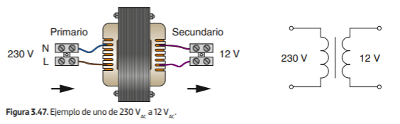
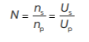

4. El transformador
Un transformador es una máquina eléctrica estática que funciona por el efecto de inducción magnética. Está formado por dos bobinas, denominadas devanados. Uno es el devanado primario, al que se le aplica tensión de entrada, y por el que circula una corriente que induce un campo magnético en el núcleo. Y otro es el secundario, en el que el campo magnético producido por el primero induce una corriente en la bobina, de forma que en sus bornes se genera una tensión proporcional a la del primario, en función del número de espiras de un devanado respecto al otro.

Así, se denomina relación de transformación N a la razón existente entre el número de espiras del secundario respecto al primario o, también, a la razón entre la tensión, en voltios, del secundario respecto al primario.
